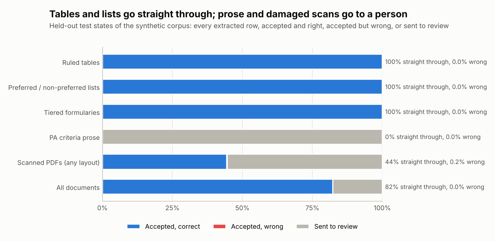

From PDF to a cited row.
Ruled tables, preferred and non-preferred lists, tiered formularies, prior authorization prose and scans with no text layer all take the same steps.
State Medicaid preferred drug lists, read from PDFs and tracked over time.
2026
Read. Matched. Cited.A market access team needs to know, for each brand and each state Medicaid program, whether it is preferred, whether it needs prior authorization or a quantity limit, and what changed this quarter. The answers sit in PDFs that every state formats its own way. PDLwatch turns them into one table, and every row cites its page.
How it works
Ruled tables, preferred and non-preferred lists, tiered formularies, prior authorization prose and scans with no text layer all take the same steps.
01
Words from the text layer, or OCR on a scan
02
Columns placed from the header words
03
Every name matched to the dictionary or RxNorm
04
Unsure rows go to review, with the reason
05
Versions compared, changes alerted
What a market access team needs from a drug list, with the page behind every answer.
Ruled tables, preferred / non-preferred lists, tiered formularies, prior authorization prose, scans and Excel lists.
01
Each row names its document, page and the line it was read from, with a confidence score.
02
Rows it isn't sure of wait for a person, with the reason. A decision made once holds on every later run.
03
Consecutive versions compared per state. The brands, classes and states a team watches, rated high, medium or info.
04
The status in force on any date, one interval per version of a state's list.
05
An LLM agent with 11 tools answers from the warehouse and cites the document and page.
06
Results
From the real-data run of 29 October 2026, and from the synthetic test set with an answer key (26 held-out states) where marked.
of 55,836 rows from 28 real files in 14 states accepted automatically. The rest wait for review with a reason.
accepted rows drawn at random had the right status, checked by eye against their line and column header.
changes found between consecutive versions of the same state's list.

Which states prefer our brand? What changed in Texas this quarter? Who puts a brand ahead of its generic?
Every state's status for a brand, with the page that says so.
For market access teams
01
Status flips, additions, removals and quantity limits between versions.
For payer marketing
02
Where a state's legend puts a brand ahead of its generic.
For pricing and contracting
03
Every GLP-1, every state, in one table.
For brand analytics
04
Rated high, medium or info, and posted once to Slack or Teams.
For account teams
05
A REST API with a key per customer, or a Snowflake share.
For data teams
06
Free under the Apache-2.0 license. OCR also needs the tesseract binary. No API key needed.
Clone
git clone https://github.com/faizanreza-cs/pdlwatch && cd pdlwatchInstall
make setupBuild, then look up a drug
make build
pdlwatch drug semaglutideI build document pipelines, analytics and AI agents like this one for pharma and consumer health teams.
Open to freelance projects and full-time roles.
Both. The test set is 106 synthetic PDFs for 50 states and DC, with an answer key; every status in them is fictional. A workflow reads 28 real files from 14 states every morning, and its accepted rows are checked by sampling.
On the 26 held-out synthetic states, 2 of 5,112 automatically accepted rows were wrong (0.04%). On real lists, all 60 sampled accepted rows had the right status. So far 59% of real rows are accepted automatically, and the rest wait for review.
No. Tables, lists and scans are read by rules and OCR. An LLM is optional, for prior authorization prose and for the agent: Anthropic, OpenAI and Azure OpenAI are supported.
Real files from 14 states download today. Adding a source is one line in the sources file; 6 of the 20 states listed there don't download yet.
No. Every row links to the state's own document, which is the source of truth.
I can set PDLwatch up for your brands and states, or build the pipeline your documents need.